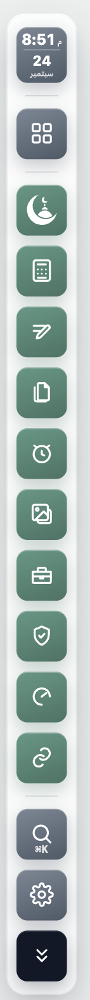
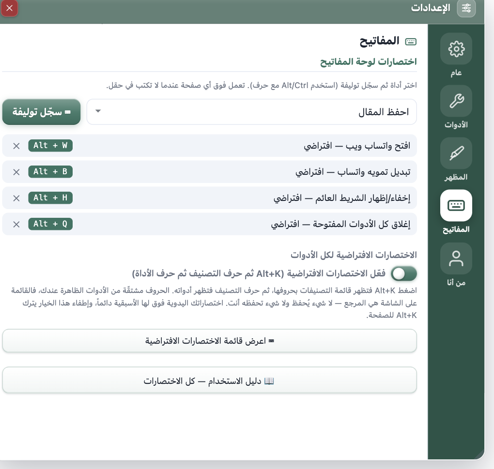
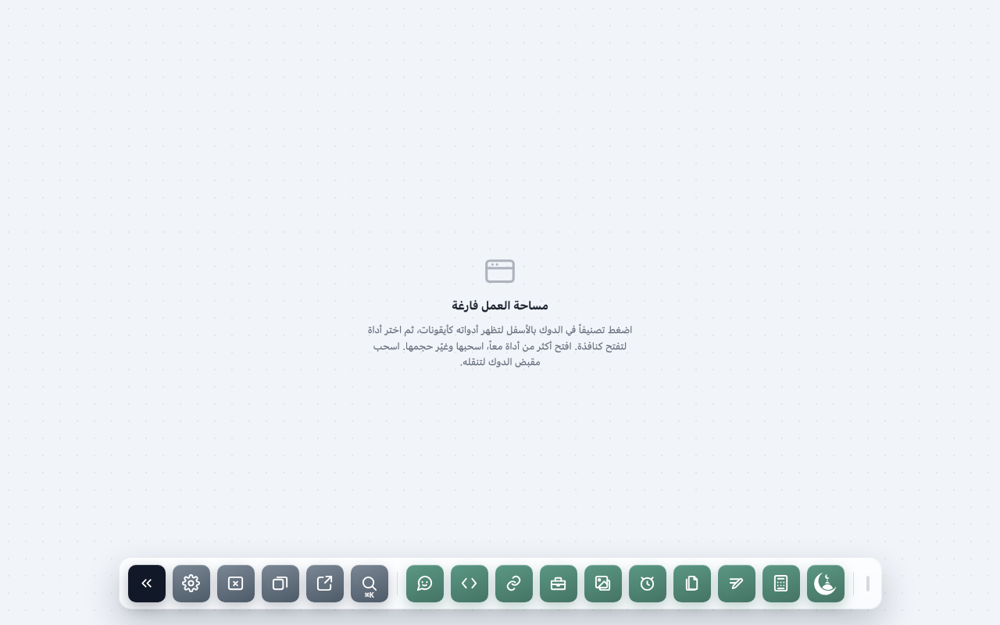
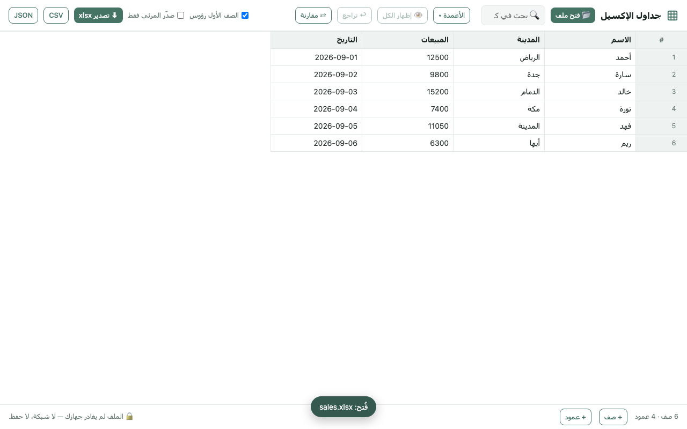
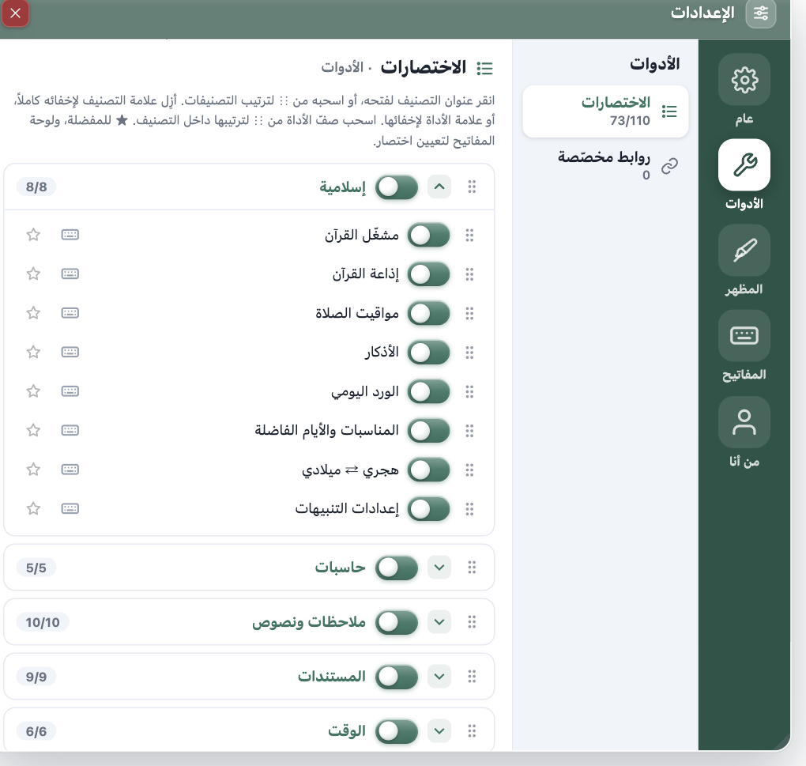
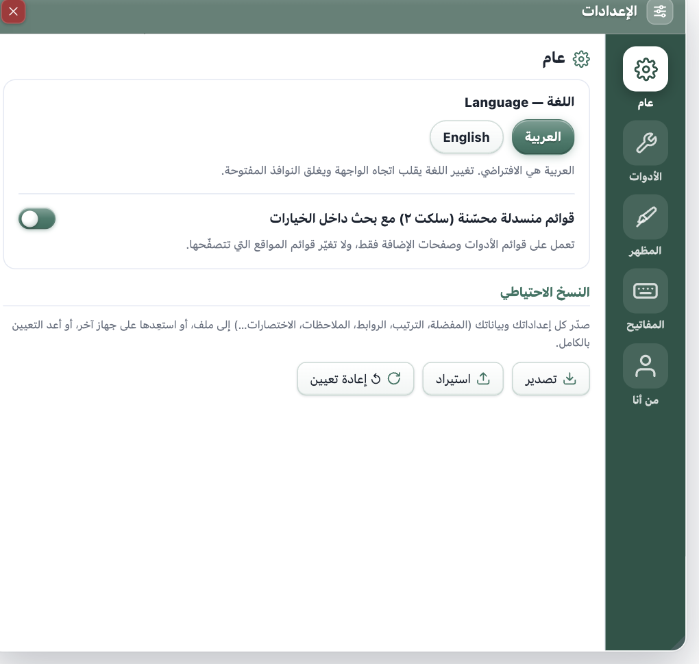

SYF Tools - Browser Toolbox
A floating toolbar over any page — calculators, privacy and protection, night & reading mode, and productivity tools. User guide.
Contents
Every part of the help in one place — click any line to jump to its slide; the number beside it is the slide number.

1) Show the floating toolbar on any page
Once installed, the SYF Tools toolbar appears automatically on the edge of any web page (right side by default). The extension icon in the browser toolbar works as a switch: click it to show or hide the toolbar on the current page.
- Pin the extension icon (📌 from the extensions menu) so the switch is always within reach.
- Change which edge the toolbar sits on (right · left · top · bottom) from General settings below, or from the position button on the toolbar itself.
💡 Tip: If the icons are hard to read over a busy, colourful site, try the Frosted or Clear button style under “Colours” on the toolbar.

2) Open your first tool as a floating window
Click (or hover) a category icon to reveal its tools, then click a tool to open it as a small floating window over the page — the page underneath stays usable.
- Drag the window by its title bar · resize it from its bottom corner · minimise it and it drops to a bottom row.
- Open several tools at once — every window is independent, and positions are remembered.
- Related tools are merged into one window with tabs: “Finance calculator” · “Tax calculator” · “Timer & stopwatch” · “Adhkar & daily portion”.
💡 Tip: Start with something light to get a feel for it — the QR generator, the calculator, or prayer times (all of which work offline).

3) Bring what you use most within reach
Inside any tool window, click the star ★ to add it to the Favourites category, which appears at the top of the toolbar — one click instead of walking through categories.
- Reorder the main category icons by dragging one onto another on the toolbar itself — the order is saved.
- A keyboard shortcut per tool: the manager panel ⚙ → “Tools” tab → the ⌨ button in the tool's row.
💡 Tip: The two tools that benefit most from a shortcut: Capture region (grabs and copies to the clipboard instantly, no window) and Workspace mode.

4) Workspace mode — a full working surface
The ⊞ Workspace button at the top of the toolbar opens a floating-window workspace (the way a desktop app works): a vertical icon dock on the right plus windows you drag and resize, with several tools open together.
- The dock: hover a category and its tools appear as an icon grid (names show on hover), then click a tool to open it as a window.
- The dock's bottom buttons: search for a tool · standalone window · arrange windows · close all windows · ⚙ dock settings.
- Drag the dock handle (the dash above it) to move it anywhere — its position is saved.
💡 Tip: From ⚙ dock settings you can set the icon size, the hover effect (Mac magnifyLiftGlow), the opacity, and edge peek — which folds the dock away until you approach it, buying you space.
Note: Tools that need a real web page (screenshot · ad blocker · element inspector · YouTube+) stay on the floating toolbar and do not appear in workspace mode.

5) Excel, Word, PowerPoint and email
These open as tabs inside workspace mode (or as a standalone page): drop a file in and it becomes editable, then export it in whichever format you want.
- Excel spreadsheets — xlsx/xls/ods/csv → edit, sort, search, hide, and export to xlsx · CSV · JSON.
- Word documents — docx → a full editor, exporting to docx · PDF · HTML.
- PowerPoint decks — pptx → text, images and drag-to-reorder, then present or export pptx · PDF · images.
- Email composer — templates and a signature, optional AI buttons, then hand off to Gmail or export
.eml.
⚠️ Important: the file never leaves your device and is not stored anywhere — close the tab and it is gone. Export your work first. Formatting, templates and animations are not preserved either (the content is read, not the design).

6) Shape the toolbar around you (the manager panel)
The ⚙ Settings button on the toolbar is the control centre, with sections in a side menu:
- General — language · enhanced dropdowns · backup (export · import · reset).
- Tools → Shortcuts — an accordion per category: reorder tools by dragging, reorder categories by dragging their headers, hide a tool (its switch) or a whole category (the header's switch), ★ favourite, ⌨ shortcut.
- Tools → Custom links — add any site (name + URL) and it shows up as a button inside the “Links” category.
- Appearance — Bar (position · icon size…) · Style (20 colours + a custom colour · 15 button styles) · Fonts · Time.
💡 Tip: The AI assistant and Developers categories are hidden by default — reveal them with the checkbox next to the category header in the “Tools” tab.

7) Your data is yours — keep a copy
Everything (favourites · order · notes · shortcuts · settings) is stored locally in chrome.storage inside your browser — nothing is sent to any server, and the extension does not collect your browsing data.
- Most tools work fully offline.
- Network access is limited to a fixed set of trusted domains (currency rates · translation · speed test · Quran and tafsir · Prof assistant).
- From General settings below: ⬇ export everything to a JSON file, and ⬆ import it on another device or browser.
💡 Tip: Export a copy before any “reset” — a reset deletes everything and cannot be undone.
Quick tips
Small things that save a lot of time — none of them takes more than one click to try.
⌨A shortcut for instant capture
Assign a keyboard shortcut to “Capture region”: drag a rectangle and the image is copied to the clipboard immediately, with no window.
📌A sticky note on screen
In the “Notes” tool, the 📌 button sticks a floating coloured note over the page, which you can drag anywhere.
🌙Night & reading mode
The “Night & reading mode” tool rests your eyes on bright sites and hides page distractions.
▶A better YouTube
“YouTube+”: speed · locked quality · volume boost · A-B repeat · cinema mode · hide distractions · shortcuts.
🛡A site broke? Whitelist it
From “Ad blocker”, whitelist the current site with one click and reload the page — every other site stays protected.
🔗WhatsApp above your work
“WhatsApp Web” opens Chrome's side panel in the same window, with the page shrinking beside it — your work and WhatsApp side by side, no second tab or window. The panel carries a row of sites (WhatsApp · Messenger · Telegram · Gmail · ChatGPT) and a field for any URL. If a site refuses to be shown in the panel, one button moves it to a standalone window.
🔑Filling forms
“Autofill” fills matching fields from a locally stored profile — and never touches passwords.
📶Works offline
Calculators · prayer times · QR generator · passwords · image compression · the timer — all of them work with no internet.
💾Back up regularly
Export your settings as JSON from “General settings” after any big customisation — and restore it on any device.
General settings
💾 Export / import settings
Save a copy of all your settings and data (favourites, tool order, custom links, notes, shortcuts…) to a file, or restore it on another device or browser.
Setting changes take effect when you reload the pages you already have open.
What is this extension?
A Chrome extension that adds a floating toolbar to the edge of any web page. Every tool opens as a small draggable window. Most tools work offline, and all data is stored locally in your browser only.
Controlling the toolbar
The control buttons (position · colours · guide · manage · help) sit below the main icons on the toolbar.
↕Reordering the main icons (drag and drop)
Drag any main category icon and drop it onto another to reorder them however suits you — the order is saved automatically.
⚙Toolbar position
Choose to show the toolbar on the right / left / top / bottom edge of the page. Your choice is saved.
🎨Style
Pick an accent from 20 colours or a custom colour (a colour picker, or a code such as #e11d48) plus one of 15 button styles (SolidGlassFrostedLiquid glassOutlinedDarkClearNeonGradientTonalSoft 3D3D keyRoundMinimalGold), which affects the main and inner icons alike. If the icons don't stand out over a busy site, try Frosted or Clear.
⭐Favourites
Inside any tool window, click the star ★ to add it to your favourites. The Favourites category appears at the top of the toolbar for quick access.
⚙Settings → Tools
From the settings button on the toolbar:
- Add a custom shortcut (name + URL) and it shows up as a button in the “Links” category.
- Hide a single tool by clearing the checkbox next to it.
- Hide a whole category by clearing the checkbox next to the category header — the entire category disappears from the toolbar.
Note: the UAE calculators (5% VAT · late-payment penalty · corporate tax · end-of-service) are now tabs inside “Tax calculator” in the Calculators category.
📖User guide
The book button opens this page at any time.
Illustrated guide
A slide for every tool, with its picture at the size it really opens at, the steps to use it and a jump by name.
Open the illustrated guideCategories and tools
Every tool in every category explained — pick a category.
Links
Gmail · Outlook
open your email.
WhatsApp Web · Telegram
messaging apps in the browser.
Microsoft Teams
work meetings and channels.
Google Drive · Google Calendar
your files and your calendar.
Facebook · YouTube · LinkedIn · X · Google
popular sites in one click.
Custom links
anything you add from “Managing shortcuts” shows up here.
Protection
Ad & tracker blocker
blocks requests to known ad networks and trackers inside the browser's network layer. Ad blocking is off by default — turn it on from “All sites” → “Block ads (network blocking)”. (Tracker, fingerprint and pixel blocking are on by default.) The badge on the extension icon shows how many requests were blocked in the current tab. From the tool window: turn the ad or tracker list on and off, or whitelist the current site if something breaks on it. Reload the page after any change.
Site cleaner
deletes the current site's cookies and/or its local storage (which signs you out of it) without touching any other site, plus a separate button to clear the browser's whole cache (with a confirmation).
Calculators
Calculator
an ordinary calculator (add/subtract/multiply/divide) with a safe arithmetic parser and no eval.
VAT
add tax to an amount or extract it from one.
Unit converter
length, weight and temperature.
Currencies
two-way conversion at live rates; type an amount in either box and the other is computed automatically.
Discount
the final price after a percentage off, plus the amount saved.
Salary (Saudi Arabia)
net salary after GOSI social insurance, from basic pay + housing allowance.
Sales commission
commission on a sales figure at a given rate.
Profit margin
margin from cost and selling price.
Compound return
how an amount grows with compounding over a period, with periodic contributions.
Overtime
pay for extra working hours.
Percentage
a percentage, a part, or a percentage change.
ROI
return on investment as a percentage.
Tax calculator (tabs — Saudi + UAE)
VAT
a country picker (Saudi Arabia 15% / UAE 5%), adding tax or extracting it.
Late-payment penalty
the penalty for paying tax late (2% immediately + 4% monthly, up to the statutory cap).
Corporate tax (9%)
tax on net profit above AED 375,000.
End-of-service gratuity
per UAE labour law (21 days for the first 5 years, 30 days thereafter).
Time
Timer
a countdown with quick presets (1/3/5/10/15/25 min) plus a repeating audible alert.
Stopwatch + Pomodoro
a stopwatch with laps, and a Pomodoro mode (focus/break with a cycle counter).
Scheduled alarm
an alert at a specific time of day.
Reminders
ready-made recurring reminders (adhkar / drink water / move) plus custom ones (every interval or daily).
World clock
the current time in different cities.
Islamic
Prayer times
astronomical calculation (Umm al-Qura) that works offline from your location.
Hijri ⇄ Gregorian
convert dates between the two calendars.
Quran player
241 reciters with their narrations, search by name and surah picker, a progress bar, playback speed, “auto-next” and repeat. Recitation keeps playing as you move between pages and tabs; only the stop button ends it. The reciter list is cached locally for 7 days, and surah names ship inside the extension.
Occasions and virtuous days
what is coming within 60 days: the white days · Mondays and Thursdays · Tasu'a and Ashura · the ten of Dhul-Hijjah and the day of Arafah · six of Shawwal · Ramadan and its last ten · the sacred months. An alert a chosen number of days ahead, and a switch per occasion. The days on which fasting is forbidden (the two Eids and the days of Tashreeq) appear as a warning. The calculation is fully offline from the Umm al-Qura calendar, with a ±1-day calibration, and every alert is off by default.
Adhkar & daily portion
(one window with tabs): morning/evening (the two Hisn al-Muslim lists with a repetition counter) · verse of the day · daily portion — a mushaf page reader in the Uthmani script (604 pages, surah name and verse numbers) with optional plain tafsir (al-Tafsir al-Muyassar — King Fahd Complex), and tracking of today's portion (pages/day), your progress through the mushaf, the number of completions, and a day streak 🔥. The Quran text and tafsir come from api.alquran.cloud and are cached locally, so a page can be read offline after its first load.
Notes
Notes
text notes stored locally.
Task List
tasks with a done/total counter and a clear-completed button.
Sticky notes
floating coloured notes over the page, draggable (several colours).
Text
Translation
translate text between languages.
Speech & text
read text aloud (TTS) + dictation that shows the words as you speak, with a voice, speed and pitch of your choosing.
Word counter
the number of words and characters in your text.
Images
Full-page screenshot
captures the page at its full height by scrolling automatically and stitching it into one image (fixed bars are hidden so they don't repeat). Download PNG/JPG or open it in the editor directly. Everything is local — the image is never uploaded anywhere.
Image editor
pen/line/box/arrow/text/crop + colour and thickness + rotate + undo, then download PNG or JPG.
Universal converter
convert a whole batch between every format: input PNG · JPG · WebP · GIF · BMP · ICO · AVIF · SVG · PDF (each PDF page becomes an image), output PNG · JPG · WebP · BMP · ICO · GIF · TIFF · PDF (with an option to merge everything into one PDF and fit to A4). ⚠️ The browser cannot decode HEIC/TIFF, AVIF can be read but not written, and GIF is single-frame.
PDF ⇄ images
extract PDF pages as images (a range such as 1-3,7 + 72/110/150/300 DPI → ZIP), or merge several images into a single PDF. Fully local — the file is never uploaded.
Video & audio download
extracts the current page's media and downloads it: public Facebook video (HD/SD), SoundCloud tracks (MP3), and any direct <video>/<audio>. YouTube is not supported. For personal use and for content you have the right to save.
Image compression
shrink image size (JPEG/WebP/PNG) with a preview and the percentage saved.
Screenshot
three tabs: select a region · the visible area · the full page. From there, quick edits or the professional editor.
Capture region
drag a rectangle and the image is captured and copied to the clipboard the moment you release the mouse, with no window opening. Assign it a keyboard shortcut in the settings to run it over any page. For regions taller than the screen, scroll with the wheel while dragging — it captures by scrolling and stitches the result (auto-copy may fail then because the operation takes longer, so use the copy button).
Screen recording
record the screen to video (WebM) with optional audio.
Tools
Excel spreadsheets
opens in a standalone page. Drop an xlsx / xls / xlsb / ods / csv file → an editable table: search across all cells, hide columns and rows, edit cells, add/delete rows and columns, sort, 50 levels of undo, multiple sheets — then export xlsx, CSV or JSON (with a “visible only” option). Hover any row number to reveal buttons to hide 👁 or delete 🗑 it. 🔒 The file never leaves your device and is not stored anywhere — close the tab and it is gone, so export your work first. ⚠️ Formulas are read as their computed value, and formatting is not preserved.
Email composer
opens in a standalone page. Write the email (Arabic/English templates + signature + formatting), then, with an explicit click: ✅ fix spelling and grammar · ✨ rewrite in a tone · ✍️ draft from your bullet points · 🌐 translate · 📝 summarise and reply. Every result is shown before/after and you accept or reject it change by change — your text is never replaced silently. Then hand the message to Gmail or your mail app, copy it, or export .eml. 🔒 Nothing leaves your device unless you press an AI button, and even then only the subject and body are sent — recipient addresses are never sent. It uses the same “AI assistant” key (with no key: the tool works and the AI buttons are disabled). The tool does not send mail itself.
PowerPoint decks
opens in a standalone page. Drop a .pptx file → every slide with its text, images and speaker notes: edit, add/duplicate/delete a slide, reorder by dragging, then ▶ present (full screen, → for the next slide, Esc to leave) or export pptx, PDF or PNG images. 🔒 The file never leaves your device. ⚠️ Text and images are read, not the design — the template, fonts, animations, SmartArt and charts are not preserved, and the export builds clean, simple slides. The old .ppt format is not supported.
Word documents
opens in a standalone page. Drop a .docx file → an editable document: headings, bold/italic, lists, tables, images, find and replace — then export a new docx, a PDF (through the print dialog: vector, searchable text), HTML or plain text. 🔒 The file never leaves your device and is not stored. ⚠️ The old .doc format is not supported (save it as .docx), and tracked changes, comments, headers/footers and macros are not preserved — what you see is what is exported. Pasting is plain text (a safety measure).
Every tool inside the spreadsheet page
the same “workspace mode” dock floats over the table: hover a category to reveal its tools, and click a tool to open it as a floating window above the table (several can be open at once). Drag the dock handle ⠿ to move it; its position is saved.
Password generator
strong random passwords with an adjustable length and options.
QR generator
a QR code for any text or link + a Wi-Fi mode (SSID/password) — works offline.
Internet speed
measure your connection speed.
Form autofill
a locally stored profile (name/email/phone/address…) fills matching empty fields in one click. It never touches passwords.
Popup windows
WhatsApp Web (side panel)
opens in Chrome's side panel: the same window, with the page shrinking beside it, the way the Claude panel works. The panel stays open as you move between pages, and carries a row of sites plus a field for any URL. You link it once: the panel's session belongs to the extension, not to the site you are browsing. If a site refuses the panel, one button opens it in a standalone window snapped to the screen edge (inside the Links category).
Site viewer
open any link in a popup window at small/medium/large size, with a list of your last 8 sites.
Tools that need a browser permission
Screenshot / screen recording:
the browser will ask you to choose the window or screen when you click. No data is uploaded — it stays local.
Speech & text (dictation):
asks for microphone permission.
Currencies / translation / internet speed / daily portion (Quran and tafsir):
connect to trusted public services to fetch data only (the Quran and tafsir come from api.alquran.cloud — al-Tafsir al-Muyassar, King Fahd Complex); no personal data is ever sent.
Privacy
All your notes, settings and favourites are stored in local chrome.storage — nothing is sent to any server.
The extension does not collect your browsing data.
Network access is limited to a fixed set of trusted domains (currency rates, translation, speed test, Quran and tafsir, and the Prof assistant) to fetch those tools' data — nothing else.
You can export/import all your settings from the “General settings” section above, or reset them completely.
💡 Site links open in a new tab. The QR generator, image compression, prayer times and the calculators all work with no internet connection.